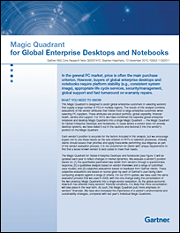

|  | Résumé: Lenovo est positionné dans le quadrant leader, selon le 2010 Magic Quadrant du rapport Gartner sur les ordinateurs de bureau et portables pour entreprises multinationales. Les fournisseurs de PC de ce quadrant remportent les meilleurs scores pour l'aptitude à exécuter et la largeur de vision. Ces fournisseurs offrent une couverture géographique plus étendue, une organisation commerciale complète, une stabilité financière, une prise en charge exhaustive de la clientèle, des portefeuilles de produits plus vastes, une disponibilité prolongée des produits et une présence plus importante sur le marché.
|